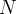
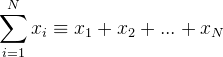
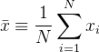
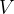
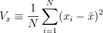
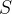
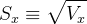

| テスト理論 |
| テスト理論 |
個の得点を足し合わせることを、 記号を用いて以下のように表す。
|  | (1) |
得点の和を足し合わせた数で割ったものを平均（算術平均）といい、“ " をつけて表す。
Figure 1 には、3つのテストについて、横軸にテスト得点、縦軸に人数を取った得点分布が示してある。 テスト1とテスト2を比べると、テスト2の方が平均が高い。
|  | (2) |
平均からの各得点の差（偏差）を2乗したものの平均を分散という。 つまり、分散は平均から各得点がどれくらいへだたっているか、その平均である。 ここでは、分散を記号で表す。
|  | (3) |
Figure 1 において、テスト1とテスト3は平均は同じであるが、得点の分散はテスト3の方が大きい。 つまり、テスト3は得点の個人差がテスト1よりも大きい。
分散の平方根を取ったものを標準偏差という。 得点のばらつき具合を報告する指標としては、分散よりもこちらの方がよく用いられる。 ここでは、標準偏差を記号で表す。
|  | (4) |
| テスト理論 |